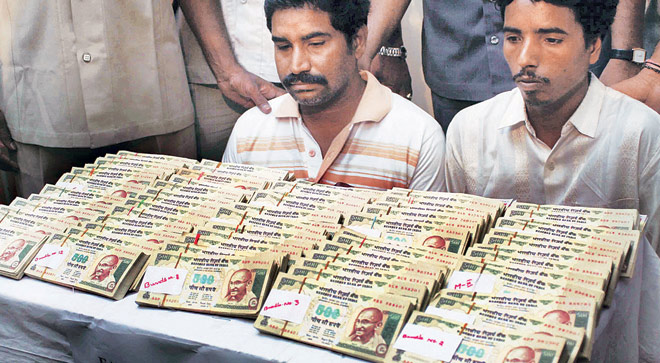
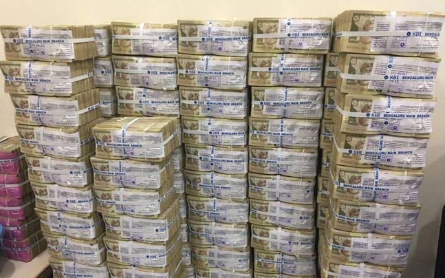
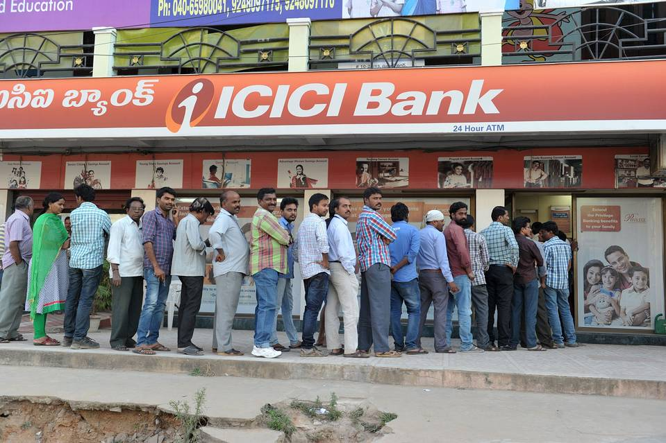

1.)Eimination of counterfeit currencyIt is not rocket science to understand that counterfeit currency is generally circulated in highest denomination notes to impact most. So, by demonetizing the highest currency notes India could almost eliminate 100% fake currency out of circulation in one stroke. |
 |
|  |
2.)Abolish Black MoneyPeople having black money generally keep their black money in highest denomination currency notes. This step would abolish black money from the economy as the owners will not be in a position to deposit the same in the banks. This step would make black money kept in cash which generally used to create chaos and terror or is lying with terrorists, Maoists, naxalites, scrap |
3.)Strengthen Indian Banking SystemThis will automatically lead to more amounts being deposited in Savings and Current Account cash laying out of economy flow is now coming into circulation. This in turn will enhance the liquidity position of the banks, which can be utilized further for lending purposes. |
 |
4.)Higher Tax CollectionThis led to higher tax collection as business men are depositing cash lying with them as current year income with advance tax. Defaulters of bank, property tax, electricity bills and telecom bills are clearing their long pending bills and thus utilizing their old currency notes. |
5.)Price Cut in Real EstateAs we all know the hype in real estate prices is because of the circulation of black money in this market. Now from this step almost all that black money would get out of circulation from this sector. Eventually the sky touching prices of properties will come down to the reach of a common man. Finally a common man can buy his dream home soon. Hopefully! |
6.)A SpeedBreaker of corruptionThis step of government will subdue corruption up to a certain level and for a considerable time period which in return will attract foreign investor to Indian market. Indian market has been the first choice of investors considering it’s large size and huge number of consumers. Till now they were reluctant to invest in India because of prevalent corruption and red-tapism. Now we can say that India has overcome both the barriers. |